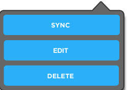

<div class="grids-wrapper" ng-controller="GridsController">
  <div class="topbar fullwidth"></div>
  <div class="mainbar fullwidth" ><a class="button back"></a>
    <h1 class="title mygrids">MY GRIDS</h1>
    <div>
      
      <map id="_Image-Maps_9201312130208556" name="Image-Maps_9201312130208556">
        <area alt="" coords="7,75,235,119" href="#edit" ng-click="changeView('/edit')" shape="rect" title="" />
        <area alt="" coords="3,126,231,170" href=""  ng-click="delete_grid($event)" shape="rect" title=""  />
      </map>
    </div>
    <a class="button menu" ng-click="toggle_menu()"></a>
    <a class="button next"></a></div>
  <div class="grids-content fullwidth" ng-click="hide_menu()">
    <a class="grid-button create-grid-button" ng-click="changeView('/add')"></a>
    <div class="grid-button coverage-grid-button"  ng-class="{selectedgrid: grid.selected && grid.selected == true}" ng-click="select_grid(grid, $index)" ng-model="grid" ng-repeat="grid in grids">
      <div>
        
      </div>
    </div>
  </div>
  
  <div class="footer fullwidth">
  </div>
</div>
